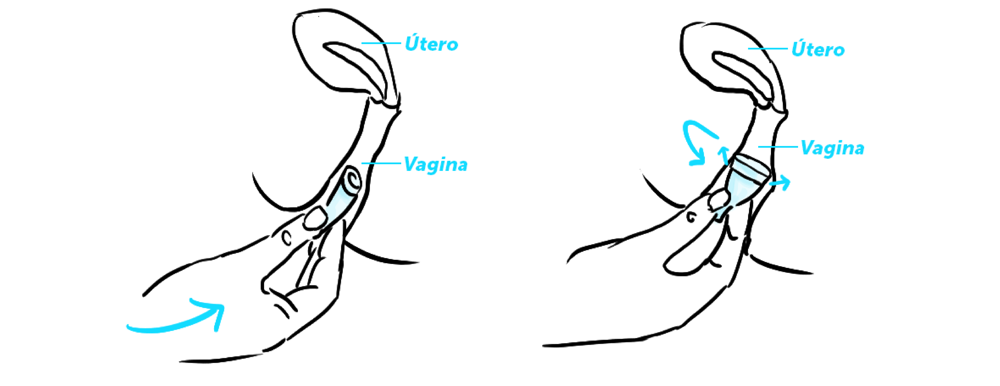
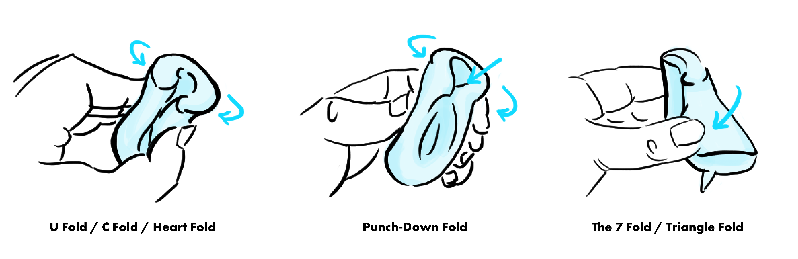
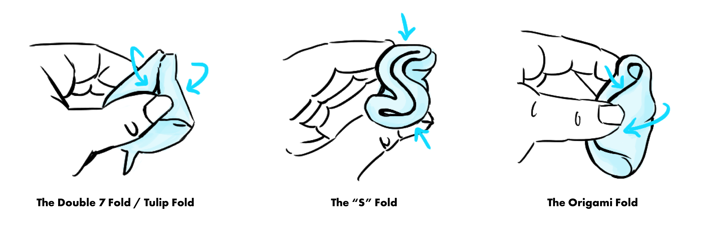

ˇˇˇ
“No tuve que volver a comprar tampones ni toallas. Uso la copa todos los días que tengo el periodo, ni siquiera tengo que ponerme un protector diario.”
“Mi piel es muy sensible y alérgica; cada vez que tenía la menstruación se me irritaba el área por los kotex. Llevo 3 meses usando la copa menstrual y desde la primera vez noté la diferencia en mi piel.”
Motivada por opiniones así de parte de mis amigas y conocidas, y debido al hype en torno a la copa menstrual de los últimos años, quise investigar si este producto era una buena opción para mí. Pedí opiniones a mis profesores ginecólogos, pero me sorprendí por su poco conocimiento del tema. Su excusa es que que son muy nuevas en Costa Rica y que no muchas de sus pacientes las usan.
Cuando de todas formas me decidí a pedir una por internet, ¡estuvo retenida en aduanas por 2 meses! Nadie ahí sabía qué era y alegaban no poder entregarla porque era un producto ilegal en el país. Intenté defenderla con el argumento de que había sido incluída en la canasta básica de este año (¡al menos por unas horas!); no hubo caso. Fue hasta que hicieron “la investigación correspondiente” que finalmente me la entregaron.
Parece mentira que un producto que está en boca de todos, y cuyos beneficios son exhibidos internacionalmente, se encuentre con tal traba en una aduana. ¿Por qué existe tanto desconocimiento al respecto?
Contrario a lo que se podría creer popularmente, la copa no es un producto nuevo: se creó en la década de los 30s junto con el tampón; sin embargo no han sido tan celebradas ni su uso se ha generalizado globalmente. Ninguno de los dos productos fue aceptado inicialmente, pero el tampón experimentó un aumento en popularidad después de la segunda guerra mundial, por razones de mercadeo. La copa no fue mercadeada sino hasta varias décadas después, en parte porque la popularidad de los tampones fue exponencial.
En las palabras de Mariana López, residente de último año de ginecología, la desinformación se debe a que, hasta hace poco, la copa no se conseguía en el país fácilmente. “El interés de la copa menstrual se ha vuelto más frecuente entre las costarricenses y su venta es cada vez más común. Su uso ha aumentado debido a que varias pacientes lo recomiendan a otras mujeres,” nos contó Mariana, y agregó que “las preocupaciones más frecuentes giran alrededor de cómo quitársela y ponérsela.” A pesar de que el “de boca en boca” ha ayudado a que la copa adquiera relevancia, el producto sigue siendo objeto de dudas, incertidumbre y mitos.
En No Pasa Nada nos pusimos la tarea de aclarar las preguntas más frecuentes que las usuarias tenemos al respecto, empezando por la primera - y sacándole de entrada el pensamiento mágico: sí, podés usar la copa aunque nunca hayás tenido relaciones sexuales.
Es un dispositivo de silicon, hule o látex que se introduce dentro de la vagina con el fin de colectar flujo menstrual, y tiene capacidad de colectar 10-38 mL. Hay dos tipos de copa disponibles: las vaginales, que se mantienen en la vagina y son las más populares, y las cervicales que se colocan alrededor del cérvix, localizado entre la parte más externa del útero y la parte más profunda de la vagina.
¿Cuál es su vida útil?
Dependiendo de la marca, estas pueden ser reutilizadas hasta por 10 años, aunque existen algunas que son desechables.
¿Es higiénica?
En cuanto a higiene y salud, no se ha demostrado un incremento de riesgo de infecciones vaginales al utilizar copas menstruales, en comparación con otros productos. Además, con la copa la menstruación es inolora, ya que la sangre no llega a estar en contacto con el oxígeno, por lo que no se oxida y no produce el olor que sí producen otros productos menstruales.
¿Es cierto que es el producto menstrual más amigable con el ambiente?
Sí. Son más ecológicas porque, en vez de desecharse luego de unas horas, la vida útil de una misma copa menstrual puede ser de años. El impacto que tiene usar tampones y toallas sobre el ambiente es enorme, debido a que estos contienen microplásticos. Se estima que una mujer utiliza 11,000 tampones a lo largo de su vida, y estos pueden durar siglos en degradarse. Además, está el problema agregado de los aplicadores, que están hechos de plástico y suelen terminar en las playas e incluso dentro de los estómagos de aves. En cuanto a las toallas, se estima que pueden tardar hasta 800 años en degradarse, y debido a que también contienen microplásticos, es posible que nunca terminen de hacerlo.
¿Vale la pena la inversión?
Si bien la copa promedio tiene un costo de $23, hay un beneficio económico a largo plazo para el usuario, ya que se ahorrarían el precio de comprar tampones y/o toallas por hasta 10 años.
¿Es muy difícil de aprender a usar? ¿Corro riesgo de mancharme y sentir molestias?
Una de las mayores desventajas de la copa es la dificultad para aprender a usarla. Sin embargo, existen varios videos en YouTube que explican cómo insertarla y removerla. Además, las copas demostraron permitir menos escapes (en un 0,5%) cuando se les comparó con los tampones.
 The Lancet, una revista médica británica prestigiosa, analizó la información de 43 estudios con 3319 participantes en total; de estas, 5 mujeres reportaron dolor vaginal y rupturas a nivel vaginal, 6 reportaron alergia al material de la copa y 9 reportaron problemas con respecto al tracto urinario (como dificultad para orinar).
¿Puede causar shock tóxico al igual de los tampones?
En la literatura médica disponible hasta el momento, se han descrito 5 posibles casos de síndrome de shock tóxico relacionados a la copa menstrual, pero se demostró la presencia de la bacteria Staphylococcus aureus - causante de este síndrome raro pero severo - en sólo uno de estos casos. Además, se cree que fue debido al uso inadecuado de la copa, es decir, por no haberla retirado después de 12 horas, o por haber usado una copa más pequeña que la que la usuaria necesitaba. Importante mencionar que, aunque los tampones son comúnmente asociados a este síndrome, los tampones modernos, por su nueva fabricación y características, lo causan mucho menos que antes.
¿Dónde puedo conseguirla y cuánto cuesta?
En Costa Rica existen varias opciones para conseguirla, entre ellas las copas Me Luna - que tienen un precio de $32; las EcoCups CR de ₡ 17,000 y las Lena Cup CR están a ₡ 25,000 en presentación regular y sensitive.
Entonces, ¿es la copa menstrual una alternativa a otros productos menstruales?
Usar un nuevo producto siempre causa algo de ansiedad. La copa resulta un poco intimidante al principio porque parece ser muy grande para nuestra vagina pero, ¿no les parece que si un bebé puede salir por ahí, la copa es inofensiva?
Usar la copa nos reconecta con nuestro ciclo y nuestro cuerpo. Usándola descubrí que es cierto: ¡mi sangre es 100% inolora! Además, pude comprobar que las toallas y los tampones nos engañan: hacen parecer que nuestro flujo es mucho más abundante de lo que es. A pesar de que según las instrucciones se debe de cambiar cada 12 horas, durante mi primer ciclo la cambié cada 4 - tenía miedo de que se llenara demasiado. Pero luego recordé algo que escuché una vez en clase de ginecología: “en realidad, la cantidad de flujo menstrual durante un día completo es masomenos equivalente a un shot de chiliguaro.”
La copa es menos amenazante de lo que parece, es un producto de larga duración y es amigable con el ambiente - sus ventajas han sido demostradas por la ciencia, y la verdad, ¡hay que perderle el miedo!
En las palabras de las usuarias:
“Desde que empecé a usar la copa hace un año, mi vida cambió en muchos aspectos. No tuve que volver a comprar tampones ni toallas, con la copa es suficiente. La uso todos los días que tengo el periodo, ni siquiera tengo que ponerme un protector diario. Varios pueden estar preocupados por la idea de estar en contacto con la sangre, pero es la sangre propia, entonces uno se acostumbra rápido. Es más higiénico también porque las toallas y los tampones agarran olor y tienen químicos que no son buenos para el cuerpo. La copa por otro lado está hecha de silicón, que es fácil de limpiar y no genera malos olores. Cuando hago ejercicio o salgo a caminar, no siento que la tengo puesta. Ya no veo el periodo como algo malo, se ha convertido en un proceso cómodo y natural de mi cuerpo. La recomiendo 100% porque además es sostenible, y necesitamos cuidar del planeta.”
“Amo todo lo que tiene que ver con la copa: es super fácil, uno la puede usar por mucho tiempo y es como si uno no tuviera la regla. Llevo casi un año usándola. Es conveniente económicamente porque no hay que comprar toallas ni tampones, por lo que uno se ahorra mucho dinero. Cuando uno viaja no se tiene que preocupar por empacar productos menstruales, sólo empaca la copa y listo, la cual no quita nada de espacio. Lo único que hay que destacar es que al principio cuesta un poco acostumbrarse a ponérsela pero una vez que uno se acostumbra, vale la pena.”
“Son muchísimas las ventajas que he experimentado usando la copa menstrual. Mi piel es muy sensible y alérgica; cada vez que tenía la menstruación se me irritaba el área por los kotex. Llevo 3 meses usando la copa menstrual y desde la primera vez noté la diferencia en mi piel. También recuerdo que, con el kotex, cuando uno se levantaba en la mañana sentía la humedad que se había acumulado durante la noche - era un sentimiento muy desagradable. ¡Con la copa menstrual me levanto y hasta se me olvida que tengo la regla! Otra de las razones por las cuales la prefiero es porque soy una persona muy activa y voy mucho al gimnasio. Cuando hago ejercicio, siento para nada la copita. No le he encontrado ninguna desventaja.”